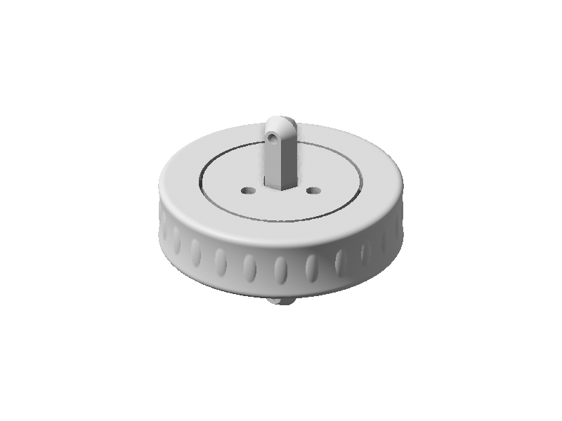
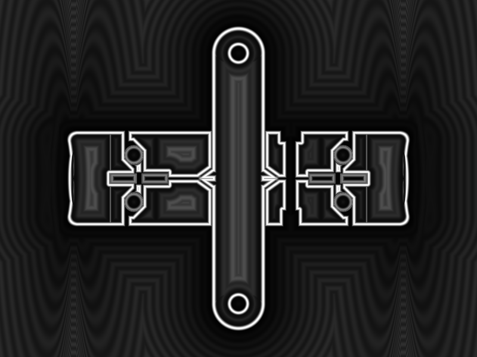

fidget-magnetic
Drafted with AI, not yet reviewed
by Reiinteractive/fidget_magnetic.scad
A magnetic fidget spinner: a printed bearing with a grip round it, on a hexagonal axis with frustums that lock the inner shell and bicone tips, and pairs of magnets in the shells, so that it clicks as it turns.
Ported from src/interactive/fidget_magnetic.scad. It differs in:
- the bearing’s port’s differences (
bearing.rhai); - the grip’s corners, rounded by
difference_roundwhere OpenSCAD opens the profile with offset(2) offset(-2): the same where the ellipse meets the faces square, and here they meet at about 40 degrees; - every round part being round, where RESOLUTION facets them: the shells, the grip, the tips (OpenSCAD’s rotate_extrude with $fn = 12), the pins’ holes and the bumps;
- PART drawing one part or all, the magnets for reference only while PREVIEW is true.
Compared with the original: within 0.30 mm, at the grip’s corners.


Files
Source
// SPDX-License-Identifier: 0BSD // // A magnetic fidget spinner: a printed bearing with a grip round it, on a // hexagonal axis with frustums that lock the inner shell and bicone tips, // and pairs of magnets in the shells, so that it clicks as it turns. // // Ported from `src/interactive/fidget_magnetic.scad`. It differs in: // - the bearing's port's differences (`bearing.rhai`); // - the grip's corners, rounded by `difference_round` where OpenSCAD opens // the profile with offset(2) offset(-2): the same where the ellipse meets // the faces square, and here they meet at about 40 degrees; // - every round part being round, where RESOLUTION facets them: the shells, // the grip, the tips (OpenSCAD's rotate_extrude with $fn = 12), the pins' // holes and the bumps; // - PART drawing one part or all, the magnets for reference only while // PREVIEW is true. // // Compared with the original: within 0.30 mm, at the grip's corners. import "bearing" as bearing; import "keycap/screws" as screws; import "keycap/inserts" as inserts; import "keycap/magnets" as magnets; // --- Parameters --- const PART = "all"; // "all", "bearing-outer", "bearing-inner-top", "bearing-inner-bottom", "bearing-cage", "axis" const CUT = false; // a section through the axis const PREVIEW = true; // the magnets and the balls, for reference const HEIGHT = 18.0; const DIAMETER = 50.0; const AXIS_R = 5.0; const AXIS_E = 20.0; const MAGNETS = 6; const INNER_GAP = 0.6; // The clearance of the axis's hole and the magnets' pockets. const T = 0.25; // --- Axis --- // The axis, or with `hole` its hole: a hexagonal prism, a frustum either // side of the bearing's middle that locks the inner shell's halves, and a // bicone at each end with a pin's hole through it, all cut to a bar as // thick as the prism across its flats. fn axis(hole) { let r = global::AXIS_R; let t = if hole { global::T } else { 0.0 }; let gap = global::INNER_GAP; let frustum = #{sides: 6}; let lock = if hole { union( cylinder(r * 1.5 + t, [0, gap / 2], frustum), cone([r * 1.5 + t, r + t], [gap / 2, gap / 2 + gap * 3], frustum), ) } else { cone([r * 1.5 + t, r + t], [0, gap * 3], frustum) }; // A hexagon revolved about its axis through two vertices, turned to lie // along Y. let tip_z = global::HEIGHT / 2 + global::AXIS_E - r; let tip = regular_polygon(6, r + t).revolve().rotate_x(90).move([0, 0, tip_z]); let pin = cylinder(1.5, r * 2).rotate_x(90).move([0, 0, tip_z]); let length = global::HEIGHT + global::AXIS_E * 2 - r * 2; union([cylinder(r + t, length, #{sides: 6}), lock, tip]) .difference(pin) .intersection(cuboid([global::DIAMETER / 2, r * cosd(30) * 2, global::HEIGHT + global::AXIS_E * 2])) .symmetric_z() } // --- Magnets --- // Her magnets, 4.85 across and 1.75 thick, and their pockets, closed for // magnets dropped in while the print is paused, T larger all round. const MAGNET = #{d: 4.85, h: 1.75}; fn magnet(hole) { let m = global::MAGNET; if hole { magnets::pocket(m, #{fit: [global::T * 2, global::T], closed: true}).move([0, 0, (m.h + global::T) / 2]) } else { magnets::magnet(m).move([0, 0, m.h / 2]) } } // A magnet in the outer shell and one in the inner, at every one of // MAGNETS angles; the inner one's pocket is in both of the inner halves. fn all_magnets(hole) { let inner = if hole { let g = global::INNER_GAP / 2; union(magnet(true).move([0, 0, g]), magnet(true).move([0, 0, -g])) } else { magnet(false) }; union(magnet(hole).move([2, 0, 0]), inner.move([-4, 0, 0])) .move([(global::DIAMETER - 10) / 2, 0, 0]) .rotate_z(60) .polar_array(global::MAGNETS) } // --- Bearing --- // An M2 screw from the top, 16 long, its head 2 below the face, into a // CNC Kitchen M2 insert 3 deep from the bottom, the screw's hole on through. let b = bearing::bearing(#{ shell_height: HEIGHT, shell_outer_diameter: DIAMETER, shell_inner_diameter: DIAMETER - 20, shell_inner_joiner_count: 3, shell_inner_joiner_height: HEIGHT / 2, shell_inner_gap: INNER_GAP, ball_diameter: 3.5, ball_count: 12, ball_margin: 0.1, cage_margin: 0.5, cage_ball_margin: 0.3, solid: true, cutters: [ screws::hole(2, 16, #{counterbore: 4}).move([0, 0, -2]), union(inserts::hole("M2", #{depth: 3}), screws::hole(2, 20)), ], }); let holes = union(axis(true), all_magnets(true)); // The grip round the outer shell: a ring with a groove round its outside, // its corners rounded, and 24 bumps on it. It reaches 1 into the shell, // so that the two do not meet on a face, where their union's field would // be 0 inside, and the magnets' pockets are cut after. let grip_profile = rect([20, HEIGHT], #{round: 2}) .difference_round(ellipse([3, HEIGHT * 2 / 3]).move([10, 0]), 2) .intersection(-1 - x); let grip = union( grip_profile.move([DIAMETER / 2, 0]).revolve(), ellipsoid([1, 2, HEIGHT / 3]).move([DIAMETER / 2 + 10 - 3.5, 0, 0]).repeat_polar(24), ); let parts_by_name = #{ "bearing-outer": union(b.outer, grip).difference(holes), "bearing-inner-top": b.inner_top.difference(holes), "bearing-inner-bottom": b.inner_bottom.difference(holes), "bearing-cage": b.cage.difference(holes), "axis": axis(false), }; // --- Output --- let shown = if PART == "all" { let all = parts_by_name.values(); all.push(b.cage.reflect_z().difference(holes)); union(all) } else if PART in parts_by_name { parts_by_name[PART] } else { throw `PART must be all or one of ${parts_by_name.keys()}, got ${PART}`; }; fn cut(s) { if global::CUT { s.intersection(-y) } else { s } } draw(cut(shown)); if PREVIEW { draw_rgb(cut(union(all_magnets(false), b.balls)), 0.5, 0.5, 0.5); }